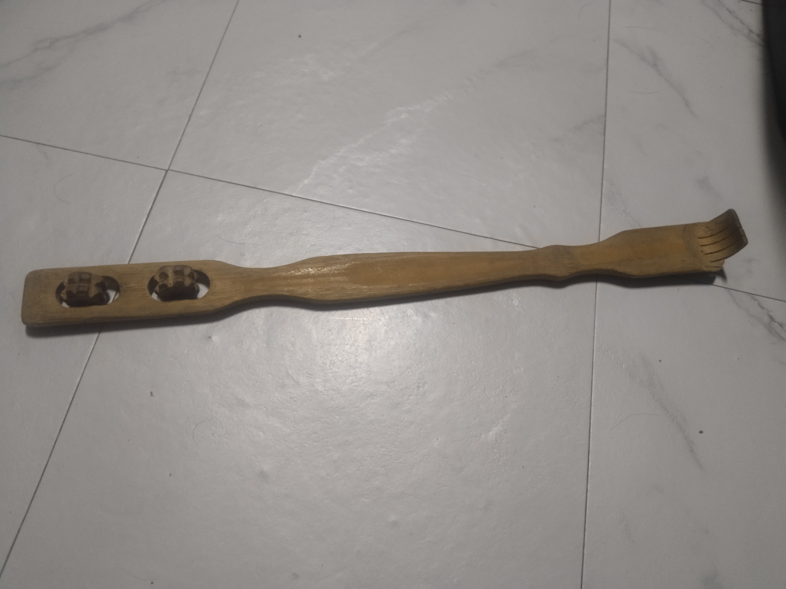

ARTIFACT #002
Ang Kahoy na Kamot-Likod na May Dalawang Gulong
THE STORY
Isang engineering marvel ng simpleng pamumuhay. Pinagsama sa iisang kasangkapan ang pangkamot sa bahagi ng likod na kailanman ay hindi maabot ng sariling kamay, at ang pampasuwerteng rolyo sa kabilang dulo.
Ito ay sumasalamin sa rurok ng kaginhawaan kapag natagpuan mo ang eksaktong lugar ng kati pagkatapos ng mahabang araw ng pagod.
Ito ay sumasalamin sa rurok ng kaginhawaan kapag natagpuan mo ang eksaktong lugar ng kati pagkatapos ng mahabang araw ng pagod.
MUSEUM NOTES
Sandata laban sa mga abot-kamay ngunit hindi matanggal-tanggal na kati sa likod.